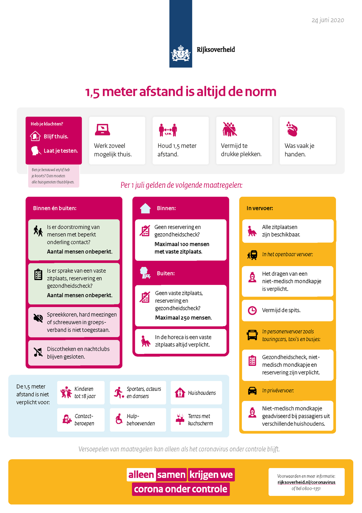
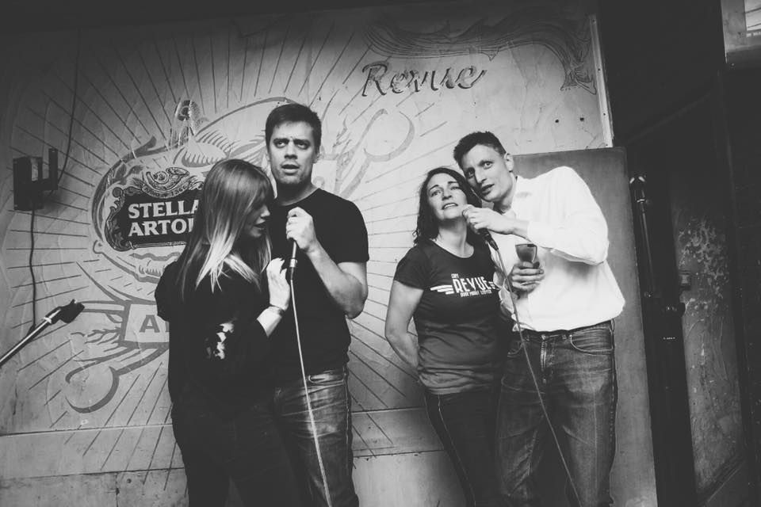
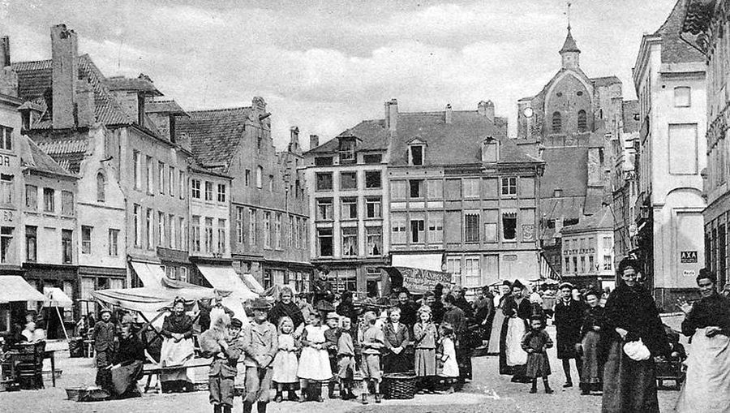

Over ons
Café revue is een café gelegen in het hartje van Leuven. Buiten een
gezellig café met een terras is het ook de vestigingsplaats voor de studentenfanfare van
Leuven. Vanzelfsprekend legt het vooral zijn focus bij studenten omdat deze met uitstek
aanwezig zijn in Leuven. Dit wil echter niet zeggen dat uitsluitend studenten welkom zijn, iedereen
kan
hier ten allen tijde binnenspringen. Van gezellig iets drinken tot je gewoonweg komen
ontspannen, het kan hier allemaal!
Wij raden u zeker aan om eens binnen te springen bij ons. Waarom zou u bij ons binnenspringen en
niet bij een van die talloze andere cafés? De grote verscheidenheid in dranken is wat ons speciaal
maakt. Nog nooit zult u zo een uitgebreid menu hebben gezien (zie aanbod).
Daarnaast is de sfeer die in ons café heerst echt uniek, u voelt zich gegarandeerd direct thuis.

COVID-19
Heel de wereld zit op dit moment opgescheept met het corona-virus en ook wij, als horeca moeten de
nodige maatregelen nemen. Wij vragen voor jullie volledige inzet om zo goed mogelijk deze
maatregelen na te streven. Sinds 19 oktober is er beslist om al de horeca te sluiten, wanneer dit
wordt opgeheven is nog onbekend. Hiernaast ziet u een afbeelding van al de standaard maatregelen die
sowieso moeten gevolgd worden. (Klik op de afbeelding voor een grotere versie). Als u vragen hebt
over deze maatregelen of in het algemeen over ons café mag u ons altijd een seintje geven. Alleen
samen krijgen we dit virus klein!
Speciale activiteiten
Voor wat extra sfeer worden er karaoke momenten georganiseerd in het café, deze geweldige avonden
worden altijd zeer positief opgenomen door onze klanten. Houd zeker onze Facebook pagina in de gaten voor meer
details!
Naast deze karaokeavonden organiseren wij bij alle grote feestdagen speciale activiteiten, op
nieuwjaar 2020 organiseerden we een gigantisch optreden waarbij u zelf uw favoriete nummers kon
aanvragen. Als dat nog niet genoeg is waren er ook nog een aantal gratis vaten en €10 korting op een
fles cava!
Onze deuren staan ook wagenwijd open voor alle sport fanaten. Elke wedstrijd van onze nationale
voetbal ploeg kunnen u en al uw vrienden komen bewonderen in ons café! Ook wielrennen, veldrijden,
formula 1 en tennis staan regelmatig op onze TV.

Geschiedenis
Café Revue is geboren in april 1985 en wanneer u bij ons iets komt drinken is het natuurlijk
belangrijk dat u weet waar u zich precies bevindt. Daarom geven wij u graag wat geschiedenis over de
oude markt mee.
De Oude Markt is een rechthoekig plein in het centrum van Leuven dat grotendeels bestaat uit
horecazaken. Hieraan dankt het zijn bijnaam de langste toog ter wereld.
Als residentiestad van de graven van Leuven kreeg het plein in 1150, toen de eerste stenen omwalling
werd gebouwd, het marktrecht waardoor er economische activiteiten werden ontwikkeld. Er werd tot
drie maal per week markt gehouden. Delen van de markt ontsnapten aan de bombardementen van de twee
wereldoorlogen, maar toch was de wederopbouw noodzakelijk.
Op de Oude Markt komt ook de classicistische vleugel van de universiteitshal uit. Hier was de
universiteitsbibliotheek gevestigd tot de vernieling in 1914. De gevel van het
Heilige-Drievuldigheidscollege is prominent zichtbaar op het zuidelijke uiteinde van het langgerekte
plein.
Daarnaast wordt er de eerste drie weken van september op de Oude Markt jaarlijks Leuven kermis
gehouden, naast het Studentenwelkom eind september. Tevens is er ook Hapje-Tapje met de
barmannenrace begin augustus (eerste zondag) en sinds 1989 wordt iedere vrijdag van juli de
Beleuvenissen georganiseerd. Dit is een serie concerten die telkens rond een bepaald thema
draait. (Wikipedia)
